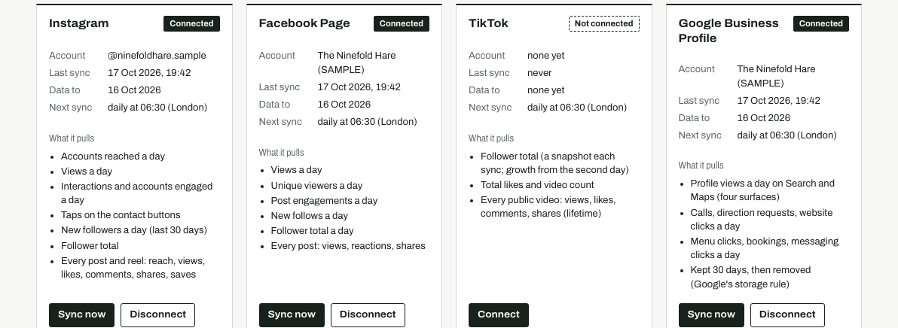

Back of House reads the records your venue already keeps, finds where you are losing money, and lines up each fix for you to sign. Your POS sales, rota, invoices, bank and accounts. Our software does the sums, a person at Back of House checks them, and nothing changes until you sign.
SAMPLEBuilt and tested on invented sample venues. Not yet live with a venue.
- Start
- An Opportunity Audit on your own records, with an hour or two in your office.
- You get
- Every leak in pounds, biggest first, with the sums.
- Then
- A 30-day trial, priced per site. Miss the target you wrote down and you stop, owing nothing more.
For hospitality venue owners and operators.
Get found, and fill quiet nights: your socials, checked against your POS.

Pick a day, then approve it.
Wednesday dinner, 4 weeks, against Tuesday dinner (chosen before launch). Rung in 29 times.
The range runs from a loss to a gain, so the POS cannot say which. To settle it: more campaign weeks, or weeks on and off. This test only sees a change bigger than £225.54 a week.
not proofInstagram’s own count: 8 posts carrying the code word, reach 5,351, views 10,616. None of it enters the result.
Tuesday, 20:00 to 23:00
Guests holding a ticket for a nearby show get a held table and a food item in the hour before or after it.
Why it fits
A person checks first
hypothesisNo figure until four closed weeks of your POS say whether it paid. Draft: nobody has signed it.
Monday, 21:00 to 23:00
Alcohol-free and half-strength serves, in the same glassware and at the same price as the full-strength list.
Why it fits
A person checks first
hypothesisNo figure until four closed weeks of your POS say whether it paid. Draft: nobody has signed it.
Monday, 21:00 to 23:00
A local organisation hosts a night at the venue and receives a fixed sum for each sharing serve sold.
Why it fits
A person checks first
hypothesisNo figure until four closed weeks of your POS say whether it paid. Draft: nobody has signed it.
SAMPLE: built and tested on invented accounts in each platform’s published format. Live linking needs Meta, TikTok and Google to approve our app: not yet applied for. Nothing posted or sent.